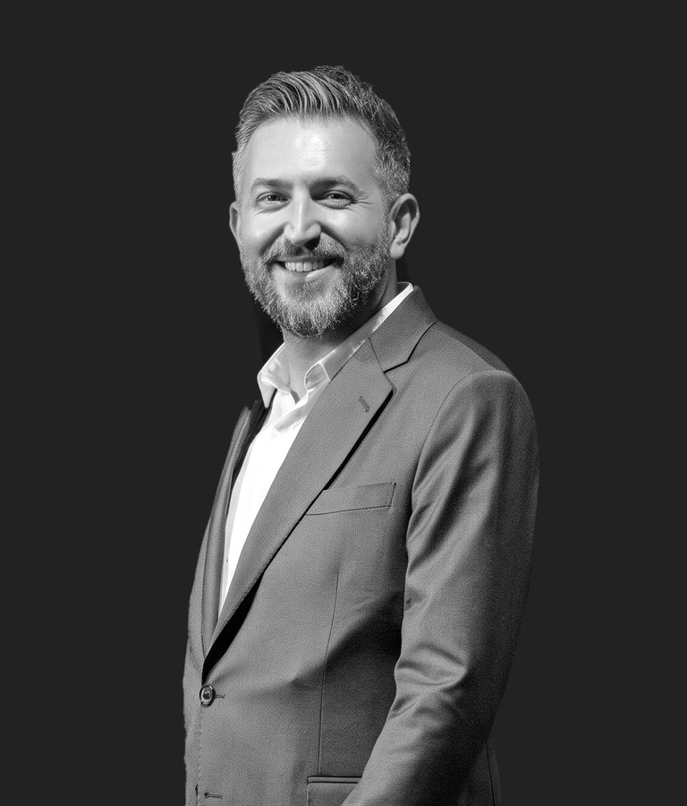

Nişantaşı'nda, randevuyla çalışan bir medikal estetik muayenehanesi.
Her uygulama, Dr. Oğuzhan Akgül ile yapılan bir görüşmeyle başlar.



Mekân görselleri temsilîdir; teslimde muayenehanede yapılacak çekim kullanılır.
Hizmetler
Botulinum toksin uygulamalarıMimik çizgilerinin oluştuğu kaslara yönelik uygulama.
Hiyalüronik asit dolguElmacık ve çene hattı gibi bölgelerde hacim ve hat çalışması.
İp askıEriyebilen ipliklerle yüz ve boyun dokusuna destek.
Dudak uygulamalarıDudak hacmi ve formu için hiyalüronik asit uygulaması.
Göz çevresi uygulamalarıGöz altı ve çevresindeki doku için seçenekler.

Her yüz için ayrı bir plan gerekir. Kararı görüşmeden sonra birlikte veririz.
Dr. Oğuzhan Akgül, görüşmelerde önceliği beklentiyi doğru anlamaya verir ve seçenekleri riskleriyle birlikte anlatır.
Özgeçmişin tamamı- Eğitim
- Çukurova Üniversitesi Tıp Fakültesi
- Hekimlik
- 22 yıl
- Medikal estetik
- 2016'dan beri
- Nişantaşı
- 2020'den beri
- Belge
- ST-6595 Sağlık Turizmi Yetki Belgesi
Muayeneden önce kullanabileceğiniz araçlar
Testler bilgilendirme içindir, tanı koymaz. Sonucunuzu yazdırıp görüşmeye getirebilirsiniz.
Randevu ve hazırlık
Cilt
- Cilt Tipi TestiCildinizin yağ, kuruluk ve hassasiyet eğilimini anlatır.
- Fototip TestiCildinizin güneşe tepkisini açıklar.
- Leke Eğilimi TestiLeke oluşumunu etkileyen alışkanlıkları gösterir.
- Hassas Cilt TestiKızarıklık ve batma eğiliminizi tarif eder.
- Göz Altı Morluk TipiMorluğun olası nedenlerini anlatır.
Uygulama ve iyileşme
- İyileşme Süresi HesaplayıcıUygulamaya göre hekim onaylı süre aralığını gösterir.
- Özel Gün TakvimiÖzel bir gün öncesi genel zamanlama bilgisi verir.
- İşlem Sonrası Bakım AsistanıUygulamadan sonraki günler için bakım bilgisini hatırlatır.
- Acil Belirti KontrolüHemen haber verilmesi gereken belirtileri listeler, muayenehaneye ya da 112'ye yönlendirir.
Özel konular
- Aşırı Terleme TestiTerlemenin günlük hayata etkisini ölçer.
- Saç Dökülmesi AnketiDökülmenin süresini ve biçimini tarif etmenize yardımcı olur.
- Güneş Koruma DanışmanıBulunduğunuz yerin UV indeksine göre genel koruma bilgisi verir.
- Bakım Rutini OluşturucuSabah ve akşam için markasız ürün tipi sıralaması çıkarır.
Konsültasyon nasıl ilerler?
Talep
Formu doldurursunuz ya da WhatsApp'tan yazarsınız. Ekibimiz sizi arayarak uygun zamanı planlar.
Görüşme
Hekim beklentinizi dinler, yüzünüzü ve sağlık geçmişinizi değerlendirir.
Plan
Seçenekler, riskleri ve iyileşme süreci birlikte konuşulur. Karar sizindir.
Kontrol
Uygulama yapıldıysa bakım bilgisi ve kontrol zamanı size iletilir.